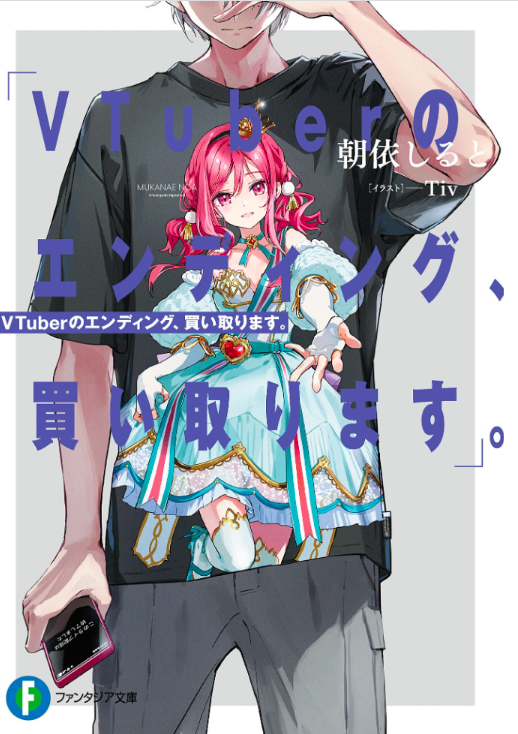

Vtuber no Ending, Kaitorimasu.
Novel Info's
Status: Ongoing
Genre: Comedy, Drama, Romance
Author: Asai Shiruto
Illustrator: Tiv
Volumes: 1
Original Publisher: Fantasia Bunko, Kadokawa
English Publisher: N/A
Fan Translation: CClaw Translation
Description/Sypnosis
Mukanae Noa is a Vtuber affiliated with Vtuber Idol Group, Hoshigaoka High School.
Karube Gou, a highschooler who spent his whole youth supporting his Oshi, Mukanae Noa, and is a well-known fan in the Vtuber world, had his life turned upside down when Noa’s real identity was exposed and flamed on the internet.
“That night, I died.”
The management of Hoshigaoka High School announced the retirement of Mukanae Noa, and Gou took an absence from school as a result. One year later, he now spends his days as a blogger who deals with Vtuber flaming.
“Please flame my Vtuber,” But a request appeared from a beautiful girl in front of Karube’s Gou apartment— “This is to help someone…. No, to help a Vtuber.”
A story of rebirth and salvation to produce your Oshi’s ending.
Download Links
Epub & Pdf